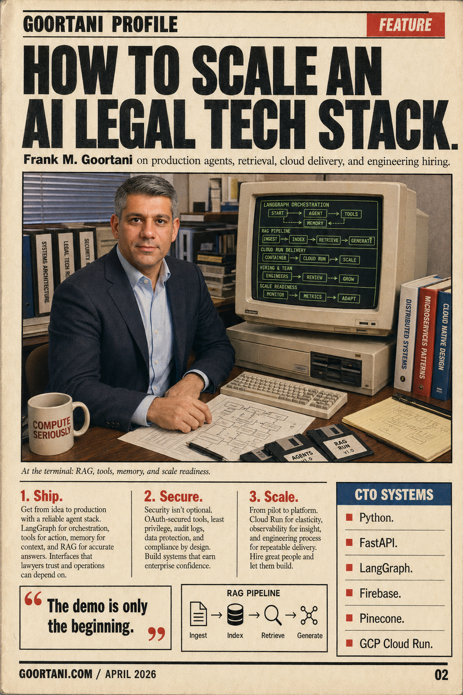
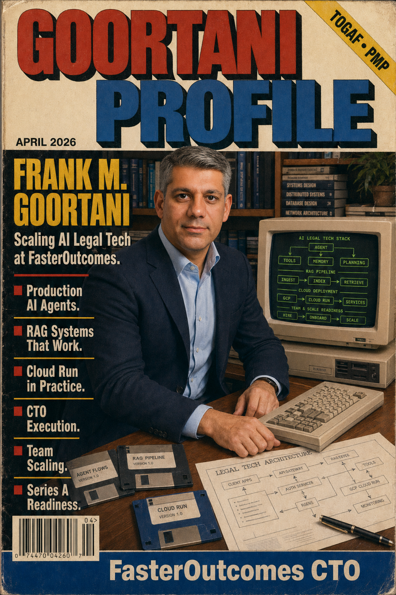
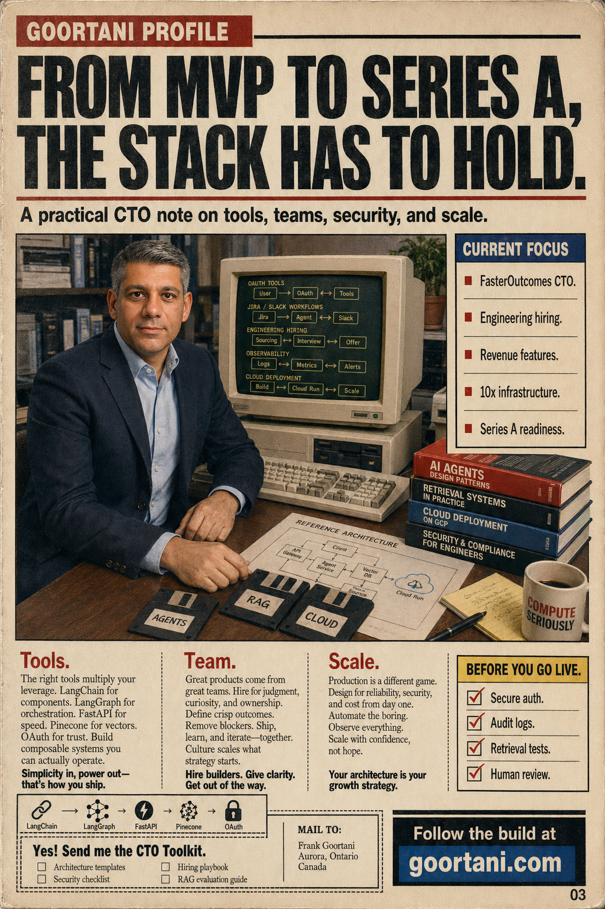

Personal Profile / CTO at FasterOutcomes
Frank M. Goortani
AI engineering leader building production agents, cloud systems, and teams.
FasterOutcomes CTO
TOGAF
PMP
Full-time CTO at FasterOutcomes, focused on scaling an AI legal tech platform, hiring the engineering team, and preparing systems for Series A growth. Previously Solution Architect at Uber, where he built the award-winning ELLE AI Decision Engine for security and privacy automation.

System Requirements
Production AI is still systems work.
Agent Architecture
LangChain, LangGraph, FastMCP, agentic workflows, RAG pipelines, vector search, retrieval testing, and model governance.
Cloud Delivery
Python, FastAPI, React, Firebase, Firestore, GCP Cloud Run, GitHub Actions, OAuth-secured tools, and operational monitoring.
CTO Execution
Technical strategy, product architecture, engineering hiring, product delivery, Series A readiness, and AI-first development culture.
Field Notes
From enterprise platforms to startup scale.
Frank's public profile is in maintenance mode while his primary focus is full-time CTO execution: shipping revenue-driving AI legal tech, scaling engineering, and preparing infrastructure for the next stage.
FasterOutcomes
Full-time CTO for an AI legal tech startup, leading product architecture, technical strategy, engineering hiring, and scale readiness.
ELLE AI Decision Engine
Solution Architect for security and privacy systems, including the award-winning ELLE AI Decision Engine.
Platform Leadership
Led web platform, cloud migration, microservices, Angular/React architecture, and mobile team formation work.
Reader Service Card